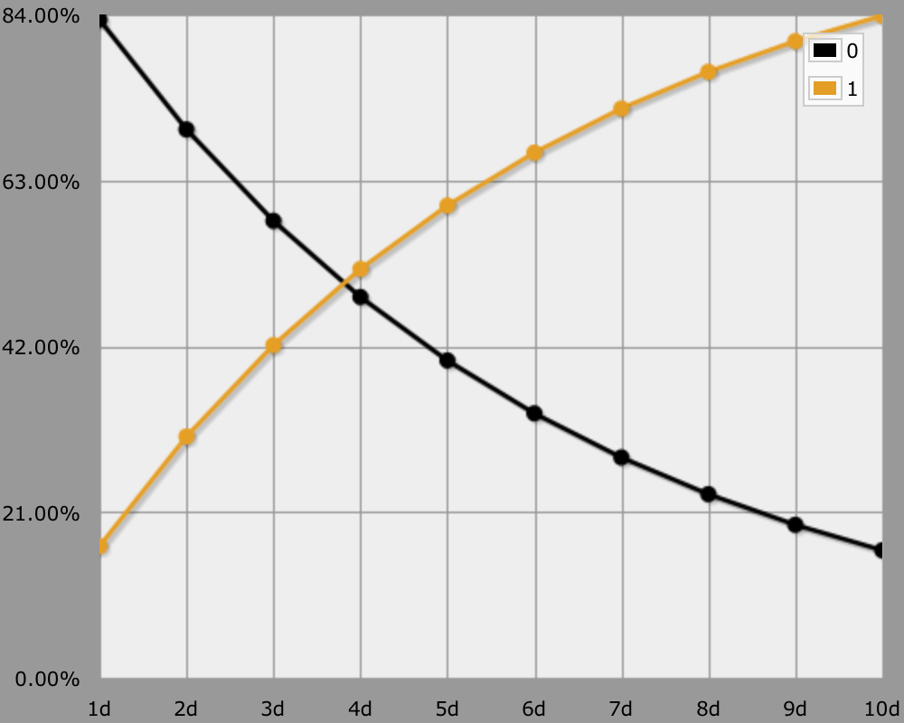

The Pool
A Milestone in RPG Design
The Pool is a little RPG document written by James V. West. While it may not look like much nowadays, at the time it was written it opened a lot of eyes.
The resolution mechanic is as simple as it is elegant. Roll some d6. If you rolled at least a single 1, then you succeed, otherwise you fail.
Using AnyDice, it's easy to compare the performance of different pool sizes. The transposed graph view is very useful for this.
loop DICE over {1..10} {
output DICE d (d6 = 1) > 0 named "[DICE]d"
}

| Dice | Odds | Mnemonic |
|---|---|---|
| 1 | 16.67% | ⅙ |
| 2 | 30.56% | ⅓ |
| 3 | 42.13% | |
| 4 | 51.77% | ½ |
| 5 | 59.81% | |
| 6 | 66.51% | ⅔ |
| 7 | 72.09% | |
| 8 | 76.74% | ¾ |
| 9 | 80.62% | |
| 10 | 83.85% | ⅚ |